화면상에서 개발한 시나리오의 로직이 정상적으로 구동되는지 눈으로 확인할 수 있으며 설정한 변수의 값을 확인해 볼 수도 있습니다.
사전 준비 사항
· ForCus가 설치된 서버(네트웍크가 분리되어 있고 방화벽이 있는 경우 디버깅 포트에 대한 방화벽 처리)
· 운영관리 서버
· SIP Phone 및 Soft Phone
· 디버깅 시작 시나리오(기본 제공 또는 없는 경우 작성햐여 운영관리(SWAT) 업로드)
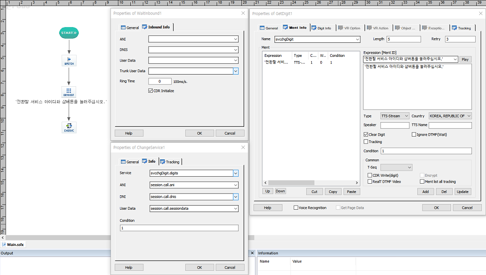
시나리오 작성 시 WaitInbound -> GetDigit -> ChangeService 아이템 순으로 배치 한 다음 그림과 같이 속성을 설정합니다.
GetDigit
• Name : svcchgDigit
• Length : 4
• Retry : 3
• Ment
Expression [Ment ID] : '전환할 서비스 아이디와 샵버튼을 눌러주십시오.'
Type : TTS-Stream
Country : KOREA, REPUBLIC OF
...
...
Condition : 1
ChangeService
• Service : svcchgDigit.digits
• Ani : session.call.ani
• Dnis : session.call.dnis
• User Data : session.call.sessiondata
동작 구조
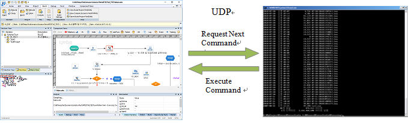
• 멀티 디버깅 지원 : 멀티 채널 디버깅을 지원하여 여러명이 동시에 디버깅 진행이 가능하다.
디버깅 시작 시나리오 및 디버깅 DN 설정
· 기본 디버깅 시작 시나리오를 운영관리에 등록 하여야 합니다.
운영관리(SWAT)에 접속 하여 기본 시나리오를 등록 합니다.
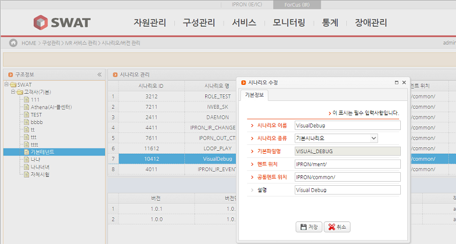
• ForCus(IR) 탭으로 이동
• 구성관리 > IVR 서비스 관리 > 시나리오/버전 관리로 이동
• 등록할 테넌트 선택 후 추가 버튼을 클릭
• 기본 디버깅 시작 시나리오를 등록
• 구성 관리 -> IVR 서비스 관리 -> 시나리오별 시스템 할당으로 이동
• 등록한 테넌트 선택
• 디버깅용 시나리오를 선택 후 시스템 할당 버튼을 클릭
• 디버깅을 사용할 시스템을 체크 하여 할당
• 서비스 -> IVR 시나리오 -> 시나리오 적용 메뉴로 이동
• 등록한 테넌트를 선택후 Visual Debugging 용 시나리오를 선택
• 시나리오 적용 버튼을 클릭하여 시스템에 시나리오를 적용
· 디버깅으로 사용할 DN을 설정하여야 합니다.
운영관리(SWAT)에 접속 하여 디버깅 시나리오용 IVR Group DN을 등록 합니다.
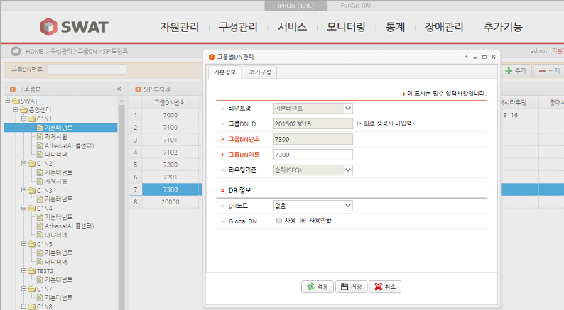
• ForCus(IR) 탭으로 이동
• 구성 관리 -> 그룹DN -> SIP 트렁크 메뉴로 이동
• 해당 테넌트 선택
• 추가 버튼을 클릭하여 그룹 DN 을 등록
• 등록한 그룹 DN을 선택 후 그룹 DN별 멤버 관리 버튼을 클릭
• SIP 트렁크 배정
· 디버깅 시나리오에 DNIS를 등록 합니다.
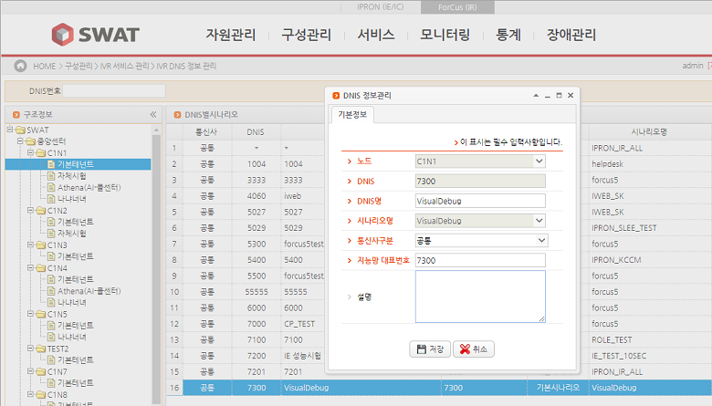
• ForCus(IR) 탭으로 이동
• 구성관리 -> IVR 서비스 관리 -> IVR DNIS 정보 관리 메뉴로 이동
• 해당 테넌트를 선택한 다음 추가 버튼을 클릭
• DNIS 에 등록한 그룹 DN 을 입력
• DNIS 명은 알아 볼수 있도록 이름을 지정
• 시나리오명은 기본 디버깅 시작 시나리오를 선택
· 기본 디버깅 시작 시나리오 등록 여부 및 작동 확인
• 시스템에 SSH로 접속
• icli 를 실행 한 다음 ir.loadscn 명령 수행 시 등록한 Visual Debugging 시나리오가 Load 되어 있는지 확인
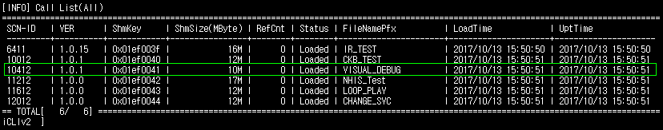
• 해당 시스템에 등록된 단말에서 등록한 그룹 DN으로 호를 시도하여 기본 디버깅 시나리오 GetDigit에 설정한 TTS가 재생되는지 확인
· 운영관리가 없는 경우 SLEE Config에 직접 디버깅용 DN번호를 설정하고 "디버깅 시작 시나리오"를 매핑한다.
· SCE 디버깅 정보는 리본메뉴 Tools > Options > Debug/Ment Tab 에서 지정 할 수 있습니다.
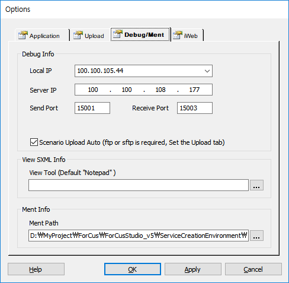
Local IP : SCE가 실행 중인 로컬 PC의 IP를 입력합니다.
Server IP : ForCus가 설치된 서버의 IP를 입력합니다.
Send Port : ForCus가 설치된 서버의 디버깅 포트를 입력합니다.(기본 15001)
Receive Port : SCE의 디버깅 포트를 입력합니다.(기본 15003)
Scenario Upload Auto Check Box : Ftp(sFtp)가 허용되는 경우 디버깅 시나리오 자동 업로드를 할수 있습니다.
체크 한 경우 Upload 설정이 되어 있어야 자동 업로드 됩니다.
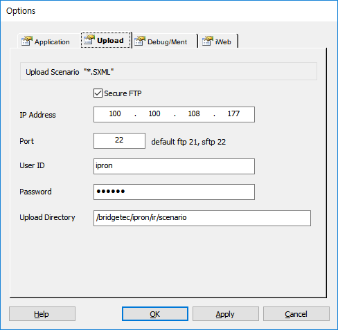
Secure FPT : Secure FTP 를 체크 합니다.
IP Address : SXML을 업로드 할 ForCus 엔진 서버 IP를 입력합니다.
Port : SXML을 업로드 할 ForCus 엔진 서버 FTP 포트를 입력합니다.
User ID : 로그인 ID를 입력합니다.
Password : 패스워드를 입력합니다.
Upload Directory : 업로드 할 디렉토리를 입력합니다.
· 디버깅할 시나리오를 빌드 완료합니다.
· SCE에서 디버깅 시나리오 자동전송이 되지 않거나 사용하지 않는 경우에 디버깅할 빌드 완료된 시나리오를 디버깅 서버로 전송하여야 합니다.
디버깅 서버의 시나리오 디렉토리에 복사를 해야 하며, 다른 디버깅 시나리오나 서비스로 등록된 시나리오 이름과 중복되지 않게 하여야 합니다.
디버깅 시나리오 자동전송의 경우는 시스템의 로컬 IP를 시나리오 이름에 붙여서 전송합니다.(ex. IR_TEST.SXML_DEBUG_100.100.105.44)
· 특정 아이템에서 디버깅이 멈추는 것을 원한다면 대상 Item에 Breakpoint를 설정합니다.(한개 또는 여러개 설정)
1. 리본메뉴 Debug > Debugging > Start(단축키 F5) 메뉴를 클릭하여 디버깅을 시작합니다.
• 디버깅 시나리오 자동전송이 설정되어 있으면, 빌드완료된 시나리오를 전송합니다.
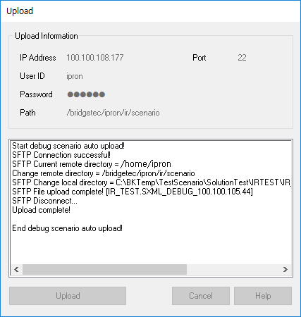
• 디버깅 정보 다이얼로그를 팝업 합니다.
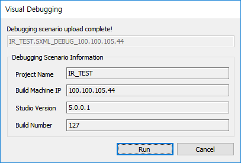
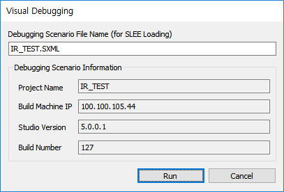
[ 시나리오 자동 전송 ] |
[ 시나리오 수동 전송 ] |
• 시나리오 수동 전송인 경우 전송한 디버깅 시나리오 이름을 입력합니다.
• 디버깅 정보를 확인하고 Run 버튼을 눌러서 디버깅을 진행합니다.
• 디버깅 정보가 디버깅 서버에 있는 정보와 일치 하지 않으면 다음과 같은 에러 창이 팝업되면서 디버깅이 중단됩니다.
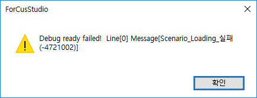
• 디버깅 정보가 디버깅 서버에 있는 정보와 일치하고 SLEE가 정상이면 에서 가상 DNIS를 발급하여 SCE로 전송합니다.
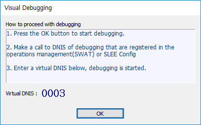
• 가상 DNIS를 확인하고 OK 버튼을 눌러서 디버깅을 진행합니다.
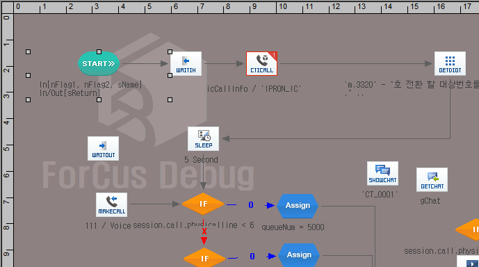
2. 디버깅으로 설정된 Group DN으로 전화를 겁니다.
• “전환할 서비스 ID와 우물정자를 눌러 주십시요” 라는 멘트가 송출 되면 가상 DNIS 번호를 입력하고 #을 누릅니다.(0003#)
• 가상 DNIS와 매핑된 디버깅할 시나리오로 Service Change되면서 시나리오 디버깅이 진행됩니다.
3. 디버깅 컨트롤키 등으로 디버깅을 진행합니다.
• Breakpoint 가 설정된 Item 이 있으면 시나리오 진행을 중단 하고 사용자 컨트롤 입력을 기다립니다.
Breakpoint 가 설정된 아이템에서 멈춘 상태

Breakpoint 가 설정된 아이템에서 멈춘 후 다음 아이템 진행 키(F10, F11) 을 누른 경우, F5인 경우는 다음 Breakpoint까지 진행합니다.
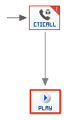
사용자 입력 단축키 및 툴바 버튼
| F5 | Start(Go), 디버깅 시작(계속) Breakpoint 가 설정된 Item 이 있으면 설정된 Item 에서 중지 |
| Ctrl + F5 | Stop, 디버깅 종료 |
| F11 | Step Into, 다음 아이템 수행 SubCall 처럼 시나리오 호출 아이템일 경우 호출할 시나리오로 가서 아이템별로 진행 |
| F10 | Step Over, 다음 아이템 수행 SubCall 처럼 시나리오 호출 아이템일 경우 호출할 시나리오로 가서 아이템별로 진행하지 않고 시나리오를 자동 진행하고, SubCall 다음 아이템에서 중지, SubCall 안에 BreakPoint Item 이 있을 경우 해당 Item 에서 중지 |
| Shift + F11 | Step Out, 현재 시나리오 에서 나감 현재 시나리오를 모두 자동 진행하고 호출한 시나리오의 SubCall 다음 Item 에서 중지 |
• 변수 값 확인(Get Variable) 및 변수 값 설정(Set Variable)
디버깅 중 중단점 에서 대기 중 변수를 Watch(Global Window)에 설정하여 아이템 진행에 따른 변수의 값을 확인 할 수 있습니다.
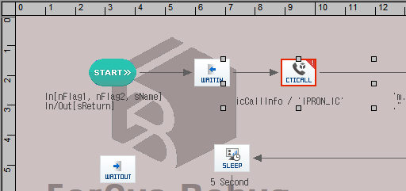
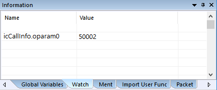
Watch 변수 및 값 설정 방법은 Name 또는 Value 리스트박스의 셀을 더블클릭 또는 셀을 선택 후 키보드 F2를 누르면 추가할 수 있습니다.
icCallInfo.oparam0 은 CtiCall 아이템의 Output 탭의 0번째 파라미터 변수 입니다.
Next Step(Step Over, Step Into)으로 진행하여 CtiCall 아이템을 처리한 후 Watch에 설정한 변수의 값을 확인 할 수 있습니다.
• Debugging 이 중단되거나 중지 시키면 중단 되었다는 창이 팝업 됩니다.
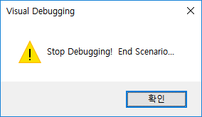
· 시나리오 중단점을 아이템에 설정하여 설정된 아이템부터 디버깅이 가능하도록 합니다.
설정
· 아이템에 설정하는 것이므로 아이템이 선택된 상태에서만 설정 가능 하며, 리본메뉴 Debug > Breakpoints > Insert/Remove(단축키 F9) 메뉴를 선택 하거나 아이템에 마우스 오른 버튼을 누르면 창이 팝업되는데 Breakpoint 를 선택 합니다.
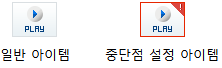
Breakpoint 로 설정된 아이템은 이미지가 바뀝니다.
삭제
· 아이템을 선택한 상태에서 리본메뉴 Debug > Breakpoints > Insert/Remove(단축키 F9) 메뉴를 선택 하거나 아이템에 마우스 오른 버튼을 누르면 창이 팝업되는데 Breakpoint 를 선택 합니다. 전체 Breakpoints 삭제는 리본메뉴 Debug > Breakpoints > Remove All Breakpoints 메뉴를 선택합니다.
· 전체 Breakpoints 삭제는 리본메뉴 Debug > Breakpoints > Remove All Breakpoints 메뉴를 선택합니다.
관리
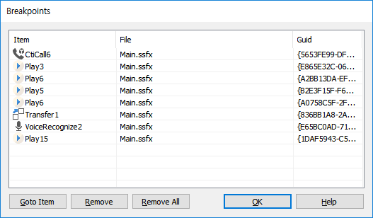
· 리본메뉴 Debug > Breakpoints > Breakpoints(단축키 Ctrl+B) 메뉴를 선택하면 관리창이 팝업 됩니다.
· Breakpoint 리스트에서 아이템을 더블 클릭 하면 해당 아이템으로 이동 합니다.
Goto Item Button : 선택한 아이템으로 이동 합니다.
Remove Button : 선택한 아이템을 Breakpoint 에서 삭제 합니다.
Remove All Button : 모든 Breakpoint 를 삭제 합니다.
· Output Window 의 Dubug Pane 에 Debug 진행 메시지 들이 출력 되면서 디버깅이 시작 됩니다.
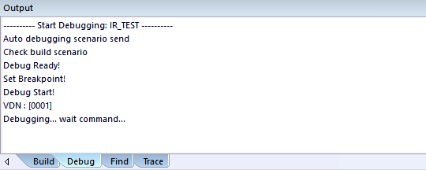
"Debugging... wait command..." : 디버깅 준비 완료 - 디버그 명령을 기다림
예외 사항
· 디버깅 사용 중 Stop Debugging을 사용하지 않거나 비정상적으로 디버깅이 종료 되었을 경우 VDN(가상 DN) 해제 여부를 확인 하여야 합니다.
VDN할당 여부 확인 및 해제
• 시스템에 SSH로 접속
• icli를 시작
• Ir.vdbg 명령을 이용하여 보여지는 값을 확인
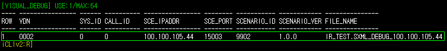
• VDN 이 등록되어 있다면 디버깅 기능을 위해VDN 이 할당되어 있는 상태
• 비정상 종료 인해 해당 VDN 을 해제 하려면 ir.dvdn 0002 와 같이 dvdn 명령 뒤에 VDN 을 입력하여 해제 할 수 있음